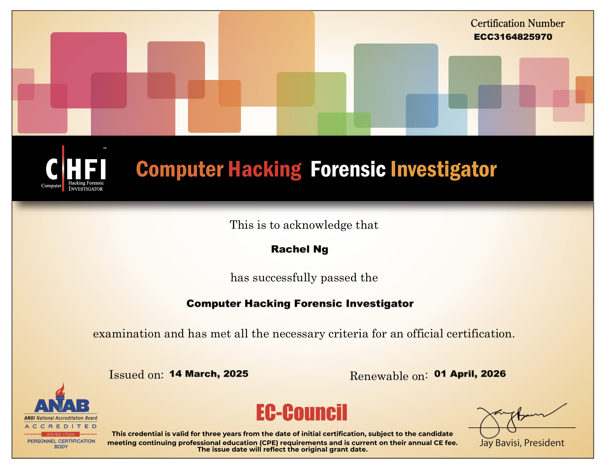
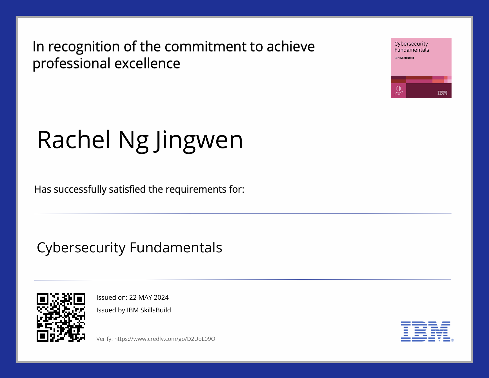
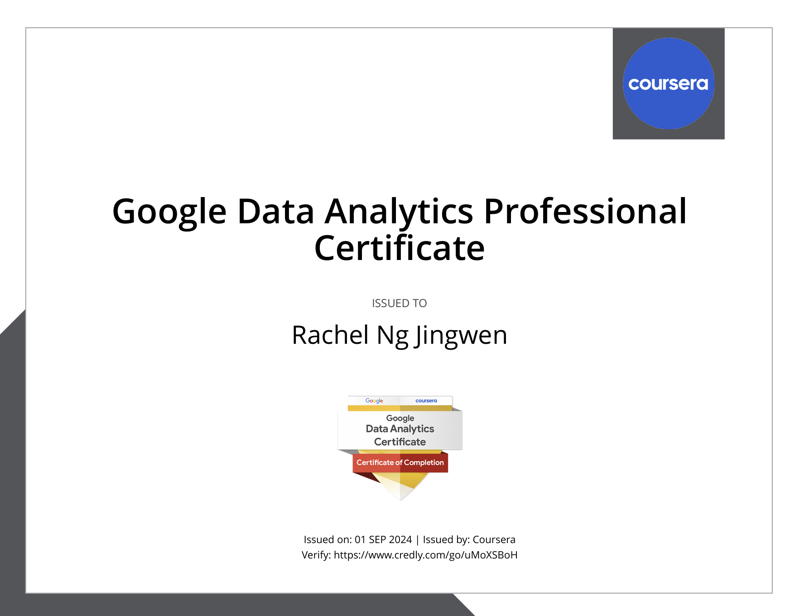
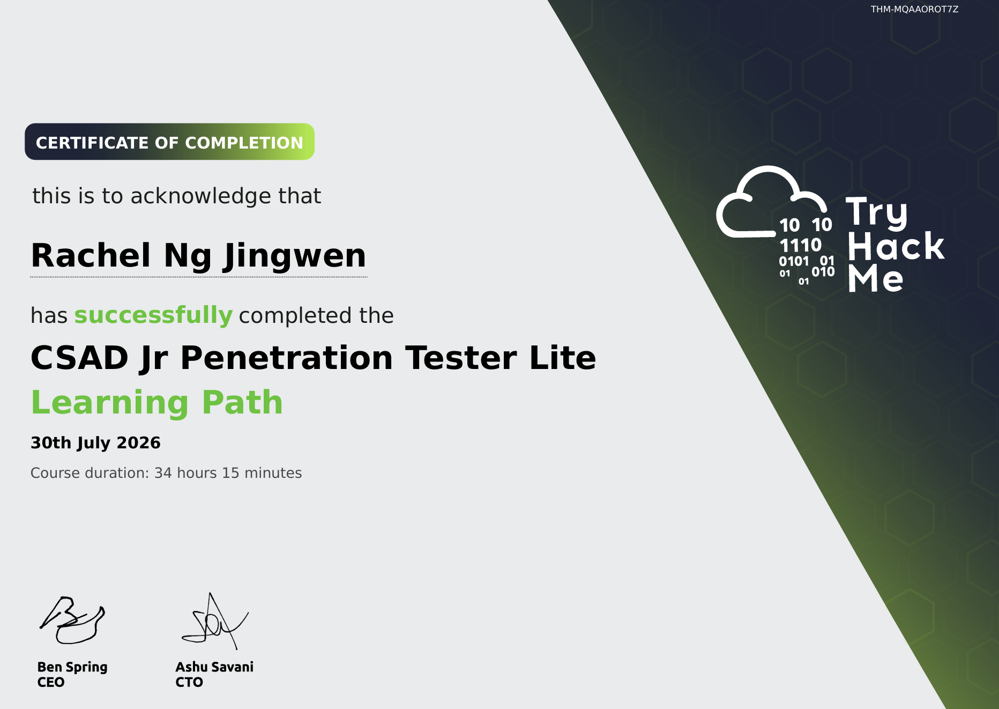
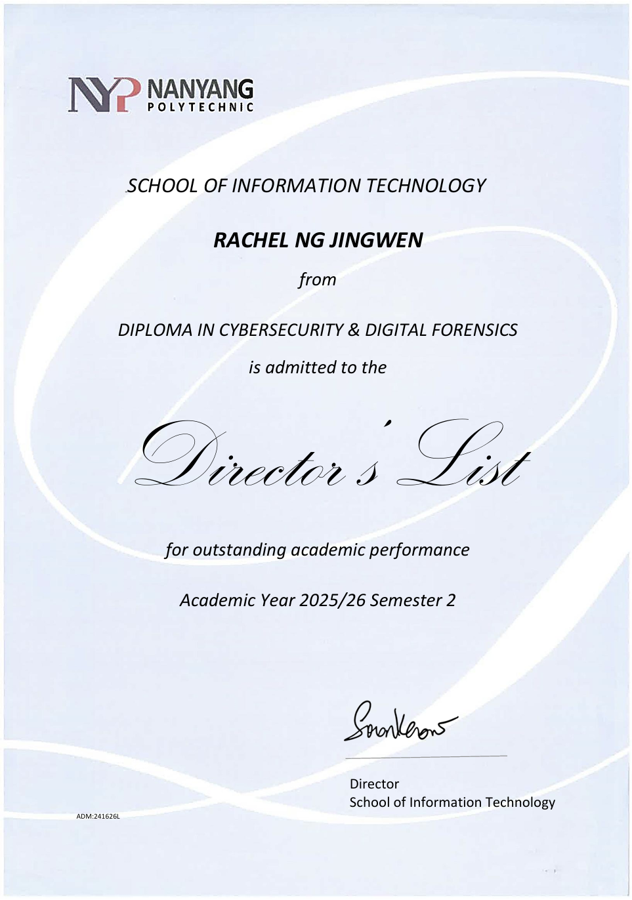
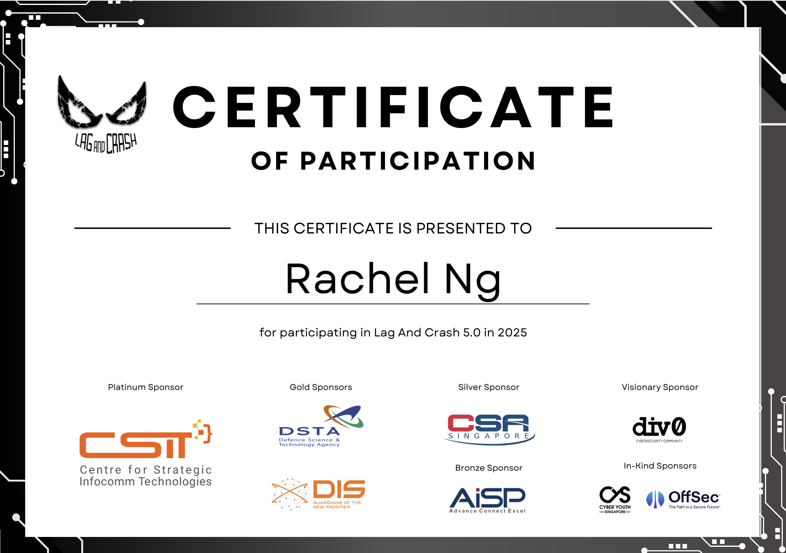

Cybersecurity & Digital Forensics · Nanyang Polytechnic
01
$ whoami
I am a Cybersecurity & Digital Forensics student at Nanyang Polytechnic, with experience in strategic planning and horizon scanning at the Cyber Security Agency of Singapore and the Ministry of Home Affairs.
Beyond that, I have worked with the Singapore Police Force and the Institute of Mental Health, and served as Vice-President of NYP Civil Defence Lionhearters - experiences that shaped how I think about security, responsibility, and people.
I want to build a career in public service where the work is serious, the purpose is real, and what you do genuinely matters in people's lives.
02
Project 01
Cybersecurity Defense Tools Implementation
Apr 2026 - Aug 2026
Built a layered defense stack consisting of Wazuh for SIEM and active response, Authentik for identity and session management, and Cowrie as an SSH honeypot. I also integrated a local LLM (Ollama, Llama 3.2) to auto-triage alerts into a structured Analysis / Recommendation / Risk rating, scoped correctly to each layer. Red-teamed the stack with Hydra brute-force attacks and Burp Suite session-hijacking / cookie replay attempts to validate real-world detection and mitigation of identity-based attacks.
Project 02
Vulnerability Assessment & Penetration Test
May 2026 - Aug 2026
Conducted a full vulnerability assessment and security audit against a Windows Server 2012 target, from reconnaissance through exploitation to privilege escalation. Used Nmap for service enumeration, exploited an unauthenticated RCE (CVE-2014-6287) via Metasploit to gain initial access as a standard user, then escalated to SYSTEM through a misconfigured, user-restartable Windows service. Delivered a vulnerability assessment report with 15 findings and risk ratings, manually validating and ruling out false positives.
Project 03
Digital Forensics Examination Report
May 2026 - Aug 2026
A school-directed digital forensics case study using EnCase to locate and document evidence of currency counterfeiting, passport counterfeiting, and credit card information theft. Produced a full examiner's report consisting of case metadata, evidence acquisition, documented findings, and followed standard chain-of-custody and examination-report conventions.
Project 04
Foresight - Horizon Scanning Platform
Mar 2026 - Aug 2026
A news intelligence crawler and dashboard that pulls signals from 50+ RSS feeds and news sources, classifying them into monitored domains (cyber threats & scams, extremism, border security, drugs, financial crime, and more). Tracks signal volume and trend growth per domain over time, and auto-generates monthly intelligence briefs and annual reports, with the option to send newsletters directly to recipients.
Project 05
Splunk Dashboard and Analysis
May 2026 - Aug 2026
I built a 3-part Splunk dashboard analyzing 236,844 HDB resale transactions (Jan 2017 - Jul 2026) to guide a first-time buyer through an affordability-based purchase decision. I designed custom derived metrics to move past raw averages into decision-ready insights. I also structured the analysis across three dashboards: market-wide price trends, town-level affordability shortlisting, and flat-level trade-offs (lease length, floor area, storey level, flat model), concluding with a data-backed recommendation weighing three purchase options against value, price, and risk.
Project 06
NeighbourlyNest
Oct 2025 - Feb 2026
Secure community web application with API key handling, anomaly logging, and server-side input validation to mitigate SQL injection and XSS risks.
Project 07
EcoStile
Apr 2025 - Aug 2025
Sustainable thrift store platform with a secure donation workflow using Shelve and JSON, and structured input validation to strengthen application integrity.
03
Work Experience
Sep 2026 - Feb 2027
Strategy and Planning Intern
Cyber Security Agency of Singapore · Strategy and Planning Division
Mar 2026 - Apr 2026
Strategic Planning Intern
Ministry of Home Affairs · Planning & Organisation Division
Nov 2022 - Jan 2023
Sales Associate (Part-Time)
My Uniform Shop
Leadership & Volunteering
Apr 2025 - Apr 2026
Vice-President
NYP Civil Defence Lionhearters
Jul 2026 - Present
Volunteer · Cyber-Cop
Singapore Police Force
Also volunteering with
04
Cybersecurity & Digital Forensics
Nanyang Polytechnic
Certifications




Awards

Competitions
SIM-LSE Data Analytics Challenge
Applied data analytics techniques to a case-based business challenge as part of a national inter-institution competition.
ParticipantBrainHack Challenge
Competed in DSTA's national tech challenge, applying problem-solving and technical skills under time pressure.
Participant
Sieber CTF
Solved capture-the-flag security challenges spanning multiple domains against other competitors.
Participant05
Cybersecurity & Forensics
Strategic & Analytical
Tools